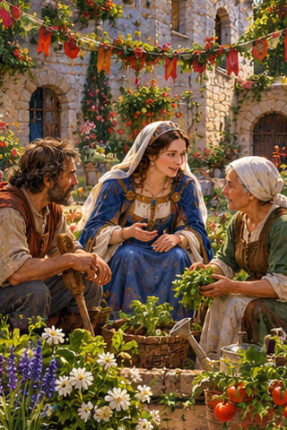
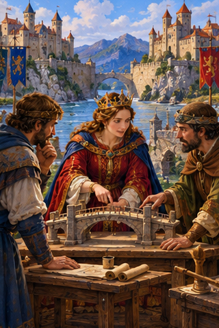
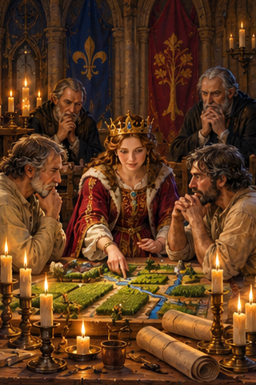
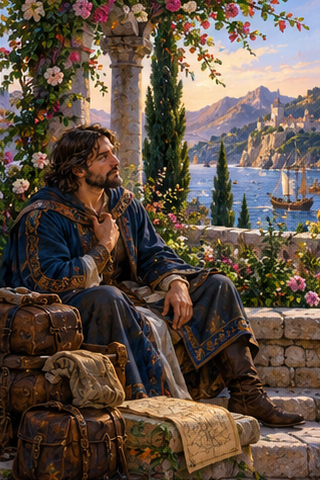
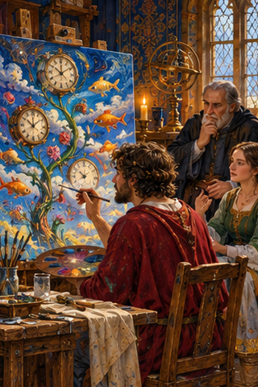
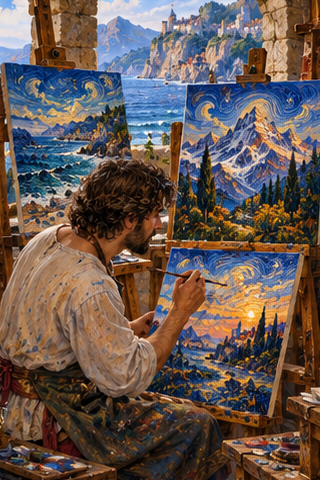
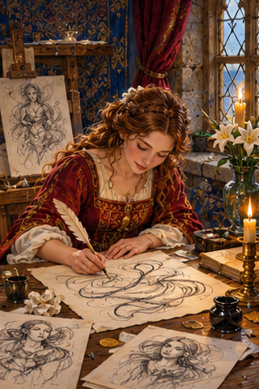
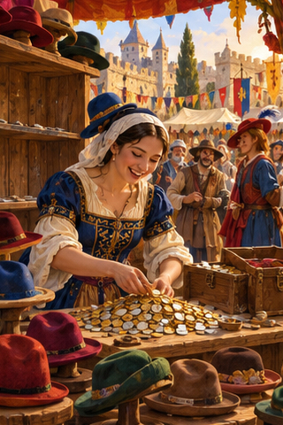
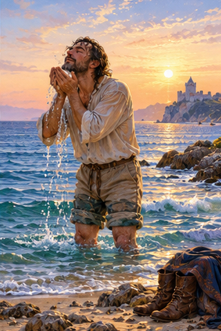

PDD Batch 31 — review only Ten 320×480 portraits, in manifest order. Not installed.
Original composite 
1. PDD 327 — La paz es un proceso que nunca termina 
2. PDD 328 — Un presidente debe tender puentes para llegar a acuerdos y no levantar paredes para seguir divididos 3. PDD 329 — La educación es la mejor inversión para la paz 
4. PDD 330 — La paz no es un sueño, sino una ardua tarea 
5. PDD 331 — Puedes ir de acá para allá, pero mientras tú no estés bien, nada de lo que te rodea lo estará 
6. PDD 332 — El surrealismo ha contribuido al arte en la misma medida en que el *psicoanálisis ha contribuido a explorar el subconsciente 
7. PDD 333 — Creo que pintaría de la misma forma en cualquier lugar del mundo, puesto que proviene de una manera particular de sentir. 
8. PDD 334 — A veces escribo como si trazase un boceto 
9. PDD 336 — Hacer el agosto 
10. PDD 337 — Agua salada, alma lavada